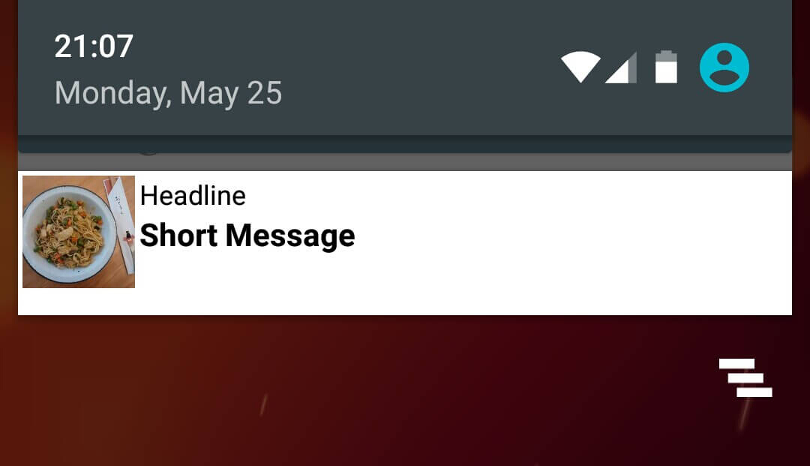
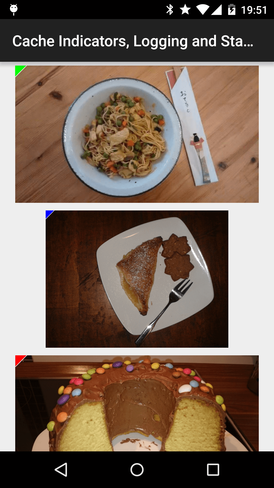

目录
- 图像请求排序
- tag() 分组请求
- 回调, RemoteView与Notifications
- 图像旋转与转换
- 图像缓存
- 缓存指示器，日志，统计
- 使用 Picasso.Builder 自定义Picasso
- 自定义请求处理
- picasso2-okhttp3-downloader 与 picasso-transformations
图像请求排序
优先级：HIGH,MEDIUM,LOW
假设有一种场景，就是图片加载需要优先级显示，这时候就会用到 priority()。这个方法需要三个参数之一： HIGH,MEDIUM,LOW，默认情况下，所有的请求是 MEDIUM。
//HIGH
Picasso
.with(context)
.load(UsageExampleListViewAdapter.eatFoodyImages[0])
.fit()
.priority(Picasso.Priority.HIGH)
.into(imageViewHero);
//LOW
Picasso
.with(context)
.load(UsageExampleListViewAdapter.eatFoodyImages[2])
.fit()
.priority(Picasso.Priority.LOW)
.into(imageViewLowPrioRight);
注：使用 priority() 并不能百分百保证图片显示的顺序，只是请求的优先级。
tag() 分组请求
您已经了解了图片的请求优先级，可能这还不够，假设我们需要同时取消，暂停，恢复多个图片请求，这将会用到 tag()
tag() 可以以任何java对象作为参数，因为，基于这些我们可以构建图像组。图像组具有以下选项：
- 暂停请求 pauseTag()
- 恢复请求 resumeTag()
- 取消请求 cancelTag()
或许你到现在也不能理解这究竟是什么，不妨我们看个小例子。
实例：pauseTag()和resumeTag()
假设我们有有个邮箱应用，内容主要用过 ListView 显示。
现在，让我们想象一个情形：用户要寻找某条信息，然后会快速的滑动，ListView本来会迅速的回收和再利用每个 container，然而，Picasso将会尝试为每个 item去做一次请求，然后立即取消，因为用户快速的滑动。
为了减少更多的请求，我们可以等 ListView 滚动结束后去加载图片，同时用户不会注意到任何差异，但是这样已经减少了请求量。
实现很容易，首先，向你的Picasso请求添加标签。
Picasso
.with(context)
.load(UsageExampleListViewAdapter.eatFoodyImages[0])
.tag("Profile ListView") // can be any Java object
.into(imageViewWithTag);
//接着，实现一个 `AbsListView.OnScrollListener` 和重写 `onScrollStateChanged()`
@Override
public void onScrollStateChanged(AbsListView view, int scrollState) {
final Picasso picasso = Picasso.with(context);
if (scrollState == SCROLL_STATE_IDLE || scrollState == SCROLL_STATE_TOUCH_SCROLL) {
picasso.resumeTag(context);
} else {
picasso.pauseTag(context);
}
}
//最后一步
listView.setOnScrollListener(onScrollListener);
当ListView处于非常快的滚动状态，它会暂停所有请求，当正常滚动或者停止，它就会恢复请求。
注： 这篇主要使用了 String 作为 tag，或许你想使用不同的对象，或许你会想到 Context or Activity, Fragment，但是官方发出了警告 如果用户离开了 Activity，垃圾收集器可能因为 Picasso无法销毁Activity对象，会出现能存泄露
回调, RemoteView与Notifications
fetch(), get()和Target之间的区别
fetch()： fetch() 将异步加载图像在后台线程，但是不显示在 ImageView 中，也不返回 Bitmat，此方法只会映射保存到磁盘和内存的高速缓存中。可以用之后要加载当前图片。
get()： get()同步加载图像，返回一个 Bitmap 对象。
Targets： into选项除了传入ImageView对象，还可以转入 Target,这是一个回调。
使用 Target作为回调机制
到目前为止，.into() 我们一直传入的是ImageView对象，当然，这个方法还有重载。我们直接看一个例子，你或许会直接明白。
Picasso
.with(context)
.load(UsageExampleListViewAdapter.eatFoodyImages[0])
.into(target);
//下面是重点
private Target target = new Target() {
@Override
public void onBitmapLoaded(Bitmap bitmap, Picasso.LoadedFrom from){
// 图片加载成功
}
@Override
public void onBitmapFailed(Drawable errorDrawable) {
// 图片加载失败
}
@Override
public void onPrepareLoad(Drawable placeHolderDrawable) {
//图片加载中
}
};
注： 这里不推荐使用匿名，垃圾回收机制可能会回收你的目标，将得不到 Bitmap
使用 RemoteView将图像加载到自定义Notifications
RemoteView 用于 Widgets和自定义notification
我们先来看一个自定义notification。
// create RemoteViews
final RemoteViews remoteViews = new RemoteViews(getPackageName(), R.layout.remoteview_notification);
remoteViews.setImageViewResource(R.id.remoteview_notification_icon, R.mipmap.future_studio_launcher);
remoteViews.setTextViewText(R.id.remoteview_notification_headline, "Headline");
remoteViews.setTextViewText(R.id.remoteview_notification_short_message, "Short Message");
remoteViews.setTextColor(R.id.remoteview_notification_headline, getResources().getColor(android.R.color.black));
remoteViews.setTextColor(R.id.remoteview_notification_short_message, getResources().getColor(android.R.color.black));
// build notification
NotificationCompat.Builder mBuilder = new NotificationCompat.Builder(UsageExampleTargetsAndRemoteViews.this)
.setSmallIcon(R.mipmap.future_studio_launcher)
.setContentTitle("Content Title")
.setContentText("Content Text")
.setContent(remoteViews)
.setPriority(NotificationCompat.PRIORITY_MIN);
final Notification notification = mBuilder.build();
// set big content view for newer androids
if (android.os.Build.VERSION.SDK_INT >= 16) {
notification.bigContentView = remoteViews;
}
NotificationManager mNotificationManager = (NotificationManager) this.getSystemService(Context.NOTIFICATION_SERVICE);
mNotificationManager.notify(NOTIFICATION_ID, notification);
上面一些代码都是创建一个自定义布局的通知，但是不打算深入细节，因为这不是我们要说的重点。我们去使用Picasso去实现这一需求，它是非常的容易：
.into(android.widget.RemoteViews remoteViews, int viewId, int notificationId, android.app.Notification notification)
Picasso
.with(UsageExampleTargetsAndRemoteViews.this)
.load(UsageExampleListViewAdapter.eatFoodyImages[0])
.into(remoteViews, R.id.remoteview_notification_icon, NOTIFICATION_ID, notification);
如果你不知道每个变量是什么，可以常考上面的代码，我们先来看看效果图

图像旋转与转换
旋转
Picasso内置旋转功能，我们直接来看代码，因为它并不难理解。
Picasso
.with(context)
.load(UsageExampleListViewAdapter.eatFoodyImages[0])
.rotate(90f)
.into(imageViewSimpleRotate);
除了默认以中心点旋转有的时候我们或许需要其他轴点进行选装，我们可以调用 rotate(float degrees, float pivotX, float pivotY)。
Picasso
.with(context)
.load(R.drawable.floorplan)
.rotate(45f, 200f, 100f)
.into(imageViewComplexRotate);
转换
旋转只是图像处理技术的一小部分，Picasso还提供了 Transformation 用于图像处理。只需要实现 Transformation 接口的一个主要方法 transform(android.graphics.Bitmap source)，此方法传入 Bitmap，并返回转换后的。 实现这个接口后，只需要在Picasso中调用 transform(Transformation transformation) 就完成了图像的转换，说了这么多，不妨我们看两个例子。
模糊图像
首先，我们需要去实现 Transformation 接口，通过使用 RenderScript。但是这篇文章并不打算介绍 RenderScript，但是我们要明白，他可以用于模糊图像。
public class BlurTransformation implements Transformation {
RenderScript rs;
public BlurTransformation(Context context) {
super();
rs = Renderscript.create(context);
}
@Override
public Bitmap transform(Bitmap bitmap) {
// 创建一个位图，
Bitmap blurredBitmap = bitmap.copy(Bitmap.Config.ARGB_8888, true);
// 分配内存
Allocation input = Allocation.createFromBitmap(rs, blurredBitmap, Allocation.MipmapControl.MIPMAP_FULL, Allocation.USAGE_SHARED);
Allocation output = Allocation.createTyped(rs, input.getType());
// 加载一个特定的脚本
ScriptIntrinsicBlur script = ScriptIntrinsicBlur.create(rs, Element.U8_4(rs));
script.setInput(input);
// 设置模糊半径
script.setRadius(10);
// 启动ScriptIntrinisicBlur
script.forEach(output);
// 输出
output.copyTo(blurredBitmap);
bitmap.recycle();
return blurredBitmap;
}
@Override
public String key() {
return "blur";
}
}
定义完成之后，Picasso中的调用就会非常的简单了。
Picasso
.with(context)
.load(UsageExampleListViewAdapter.eatFoodyImages[0])
.transform(new BlurTransformation(context))
.into(imageViewTransformationBlur);
模糊和灰色缩放
不仅如此，Picasso的 transform方法中还提供了 transform(List<? extends Transformation> transformations),这意味着我们可以对图像使用一连串的转换。在这里，我们再实现一个灰色缩放。
public class GrayscaleTransformation implements Transformation {
private final Picasso picasso;
public GrayscaleTransformation(Picasso picasso) {
this.picasso = picasso;
}
@Override
public Bitmap transform(Bitmap source) {
Bitmap result = createBitmap(source.getWidth(), source.getHeight(), source.getConfig());
Bitmap noise;
try {
noise = picasso.load(R.drawable.noise).get();
} catch (IOException e) {
throw new RuntimeException("Failed to apply transformation! Missing resource.");
}
BitmapShader shader = new BitmapShader(noise, REPEAT, REPEAT);
ColorMatrix colorMatrix = new ColorMatrix();
colorMatrix.setSaturation(0);
ColorMatrixColorFilter filter = new ColorMatrixColorFilter(colorMatrix);
Paint paint = new Paint(ANTI_ALIAS_FLAG);
paint.setColorFilter(filter);
Canvas canvas = new Canvas(result);
canvas.drawBitmap(source, 0, 0, paint);
paint.setColorFilter(null);
paint.setShader(shader);
paint.setXfermode(new PorterDuffXfermode(PorterDuff.Mode.MULTIPLY));
canvas.drawRect(0, 0, canvas.getWidth(), canvas.getHeight(), paint);
source.recycle();
noise.recycle();
return result;
}
@Override
public String key() {
return "grayscaleTransformation()";
}
}
完成之后就是又到了Picasso中引用，这次只需要建立一个List集合。
List<Transformation> transformations = new ArrayList<>();
transformations.add(new GrayscaleTransformation(Picasso.with(context)));
transformations.add(new BlurTransformation(context));
Picasso
.with(context)
.load(UsageExampleListViewAdapter.eatFoodyImages[0])
.transform(transformations)
.into(imageViewTransformationsMultiple);
图像缓存
默认Picasso的缓存配置。
LRU内存缓存15%的可用RAM 磁盘缓存2%的存储空间，高达50mb，但是不能小于5mb 三个下载线程用于磁盘和网络访问
我们可以更改缓存大小，但是超出了本博客的范围，回到图像缓存的主题，Picasso优先尝试从内存缓存中加载图像，如果没有则在检索磁盘缓存，如果磁盘上也没有， 那么就会启动网络请求（内存->磁盘->网络请求）。此外，所有请求的图像都存储在两个缓存中（知道他们必须被删除才释放空间）。
如果你认为这种缓存策略无法满足自己，我们可以看看 MemoryPolicy
内存策略
首先，Picasso优先会从内存中获取所请求图像，如果你想跳过这一步，可以用使用 memoryPolicy(MemoryPolicy policy, MemoryPolicy... additional)。 MemoryPolicy 是一个有两个值的简单枚举 NO_CACHE和NO_STORE。
Picasso
.with(context)
.load(UsageExampleListViewAdapter.eatFoodyImages[1])
.memoryPolicy(MemoryPolicy.NO_CACHE)
.into(imageViewFromDisk);
如果你想知道 NO_STORE 用于什么情况：就是请求的图片不缓存到内存中。 我们再来看下下面的例子。
Picasso
.with(context)
.load(UsageExampleListViewAdapter.eatFoodyImages[1])
.memoryPolicy(MemoryPolicy.NO_CACHE, MemoryPolicy.NO_STORE)
.into(imageViewFromDisk);
这样做就是使请求的图片既不缓存到内存中，Picasso也不去内存中寻找。这样做的好处可以加速内存回收，因为现有API无法清理内存缓存。
网络策略
如果你想跳过磁盘缓存，可以调用 .networkPolicy(NetworkPolicy policy, NetworkPolicy... additional) 与 NetworkPolicy.NO_CACHE 作为参数。
Picasso
.with(context)
.load(UsageExampleListViewAdapter.eatFoodyImages[2])
.networkPolicy(NetworkPolicy.NO_CACHE)
.into(imageViewFromNetwork);
最后还提供了第三个选项 NetworkPolicy：OFFLINE。如果使用这个作为参数，那么Picasso只会从缓存中寻找图像，即使有网络也不会发送请求。
缓存指示器，日志，统计
缓存指示器
作为称职的开发人员，有的时候我们需要去分析图像来自何处，最简单的方法就是激活缓存指示器，只需要使用 .setIndicatorsEnabled(true) 。
Picasso
.with(context)
.setIndicatorsEnabled(true);
之后所有的图片在左上角都会有一个小指标。

- 绿色（图片来自内存）
- 蓝色（图片来自磁盘）
- 红色（图片来自网络）
日志
有的时候我们或许需要更多的信息，我们可以激活日志，.setLoggingEnabled(true)。
Picasso
.with(context)
.setLoggingEnabled(true);
这将导致所有的图片加载都将打印日志。
D/Picasso﹕ Main created [R0] Request{http://i.imgur.com/rT5vXE1.jpg}
D/Picasso﹕ Dispatcher enqueued [R0]+21ms
D/Picasso﹕ Hunter executing [R0]+26ms
D/Picasso﹕ Hunter decoded [R0]+575ms
D/Picasso﹕ Dispatcher batched [R0]+576ms for completion
D/Picasso﹕ Main completed [R0]+807ms from NETWORK
D/Picasso﹕ Dispatcher delivered [R0]+809ms
统计
我们可以得到请求的平均结果。
StatsSnapshot picassoStats = Picasso.with(context).getSnapshot();
Log.d("Picasso Stats", picassoStats.toString());
控制台将会输出
D/Picasso Stats﹕ StatsSnapshot{
maxSize=28760941,
size=26567204,
cacheHits=30,
cacheMisses=58,
downloadCount=0,
totalDownloadSize=0,
averageDownloadSize=0,
totalOriginalBitmapSize=118399432,
totalTransformedBitmapSize=96928004,
averageOriginalBitmapSize=2466654,
averageTransformedBitmapSize=2019333,
originalBitmapCount=48,
transformedBitmapCount=41,
timeStamp=1432576918067}
使用 Picasso.Builder 自定义Picasso
Picasso有着直接的方法来修改Picasso的实例 Picasso.Builder类。可以使用它自定义Picasso。
局部自定义Picasso
在进入自定义Picasso之前，我们需要简单的回顾下获取标准的Picasso实例。
Picasso picasso = Picasso.with(Context);
这个方法返回的是标准的Picasso，如果你需要建立一个自定义实例，有一种方法就是建立 Picasso.Builder对象来做调整。
// 创建 Picasso.Builder 对象 Picasso.Builder picassoBuilder = new Picasso.Builder(context); // TODO Picasso picasso = picassoBuilder.build()
接下来我们就可以使用自定义的picasso去加载图片
picasso
.load(UsageExampleListViewAdapter.eatFoodyImages[0])
.into(imageView1)
全局使用自定义Picasso
创建和修改Picasso实例方法保持不变
// 创建 Picasso.Builder 对象 Picasso.Builder picassoBuilder = new Picasso.Builder(context); //TODO Picasso picasso = picassoBuilder.build();
为了让这个Picasso变成全局的，只需要调用 Picasso.setSingletonInstance(picasso);,通常情况下，这个应该在App启动的时候初始化。
try {
Picasso.setSingletonInstance(picasso);
} catch (IllegalStateException ignored) {
}
一旦你自定义的全局Picasso，接下来所有的 Picasso.with(Context context) 调用都将返回自定义的Picasso。
既然我们学会了如何自定义Picasso，但是我们并不明白自定义Picasso能做些什么？
自定义Picasso：更改下载器
Picasso默认使用最佳可用缓存和网络组件。如果你想更换默认的下载器,你可以通过 Picasso.Builder 调用 downloader(Downloader downloader)，比如说我们的 Okhttp。
Picasso.Builder picassoBuilder = new Picasso.Builder(context); //更改下载器。 picassoBuilder.downloader(new OkHttpDownloader(new OkHttpClient())); Picasso picasso = picassoBuilder.build();
但是有一个需要注意的地方,如果你加载的图片是从自己服务器上获取的,而且服务器用的是HTTPS,而且需要一个签名,这个时候OKHttp就会因为SSL的问题而导致图片无法被加载,这时你可以选择使用UnsafeOkHttpClient,就可以避免该问题的产生;
picassoBuilder.downloader(
new OkHttpDownloader(
UnsafeOkHttpClient.getUnsafeOkHttpClient()
)
);
自定义请求处理
依旧是自定义Picasso，我们先来看一段代码。
Picasso.Builder picassoBuilder = new Picasso.Builder(context); picassoBuilder.addRequestHandler(new EatFoodyRequestHandler()); Picasso picasso = picassoBuilder.build();
唯一有疑惑的应该是 EatFoodyRequestHandler ，这是一个我们继承 RequestHandler 的自定义（请求处理）类，所以我们来看看什么是 RequestHandler。
RequestHandler实现
这是一个抽象类，有两个方法要实现。
boolean canHandleRequest(Request data) Result load(Request request, int networkPolicy)
第一个方法让Picasso知道这个请求处理程序是否处理当前请求，如果可以的话请求将被传递给 load() 方法。
不妨我们来看下这个类整体是如何实现的。
public class EatFoodyRequestHandler extends RequestHandler {
private static final String EAT_FOODY_RECIPE_SCHEME = "eatfoody";
@Override
public boolean canHandleRequest(Request data) {
return EAT_FOODY_RECIPE_SCHEME.equals(data.uri.getScheme());
}
@Override
public Result load(Request request, int networkPolicy) throws IOException {
//获取请求的host
String imageKey = request.uri.getHost();
Bitmap bitmap;
if (imageKey.contentEquals("cupcake")) {
bitmap = BitmapFactory.decodeResource(getResources(), R.drawable.cupcake);
}else if (imageKey.contentEquals("full_cake")) {
bitmap = BitmapFactory.decodeResource(getResources(), R.drawable.full_cake);
}else {
bitmap = BitmapFactory.decodeResource(getResources(), R.mipmap.ic_launcher);
}
return new Result(bitmap, Picasso.LoadedFrom.DISK);
}
}
代码看起来并不理解，首先 canHandleRequest 方法中判断uri的协议是否等于 eatfoody。如果不是，Picasso会回复到标准的下载流程。如果是，那么就会进入 load 方法，在 load 方法中，我们判断uri的 host 部分，随后通过判断返回相应的 bitmap。
//这会按照标准的流程加载图片
picasso
.load("http://i.imgur.com/DvpvklR.png")
.into(imageView1);
//他会进入 load 方法中的逻辑判断去加载 `R.drawable.full_cake`
picasso
.load("eatfoody://cupcake")
.into(imageView2)
picasso2-okhttp3-downloader 与 picasso-transformations
如果你仔细看过前面的内容，我想你已经明白了下载器以及转换。他的可扩展性是不可否认的，那么自然会有很多优秀的开发者会去为我们提供相应的框架。
但是我们需要添加相关的依赖，这个并不困难，可以自己去翻阅github，同时也给出了实例。
总结
Picasso的使用教程暂时到这里，有机会我们还会去带你阅读他的源码，但是博主承认目前为止还不够成熟，所以我们放在后面带你去阅读，因为他的设计理念，可扩展真的非常出色，即便是博主现在一直使用的Glide也是基于累死的设计模式，只是在策略上略有出入。同时，我们还要学习Glide，虽然两者差不多，但是还是要给有需要的人..... 当然，少不了博主对于他们两者之间的对比分析，这或许会更加的有意思。